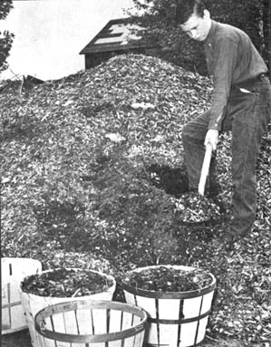

If your soil has a a tendency to pack hard in summer, there is no better natural medicine than wood chips to keep that dirt loose and porous. Use the chips like any other mulch, especially on garden paths and in heavily traveled areas. Best of all, like many mulches, wood chips are free for the hauling in most regions.